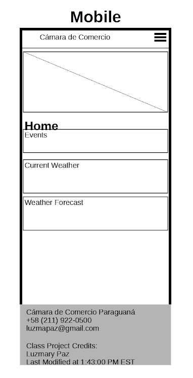
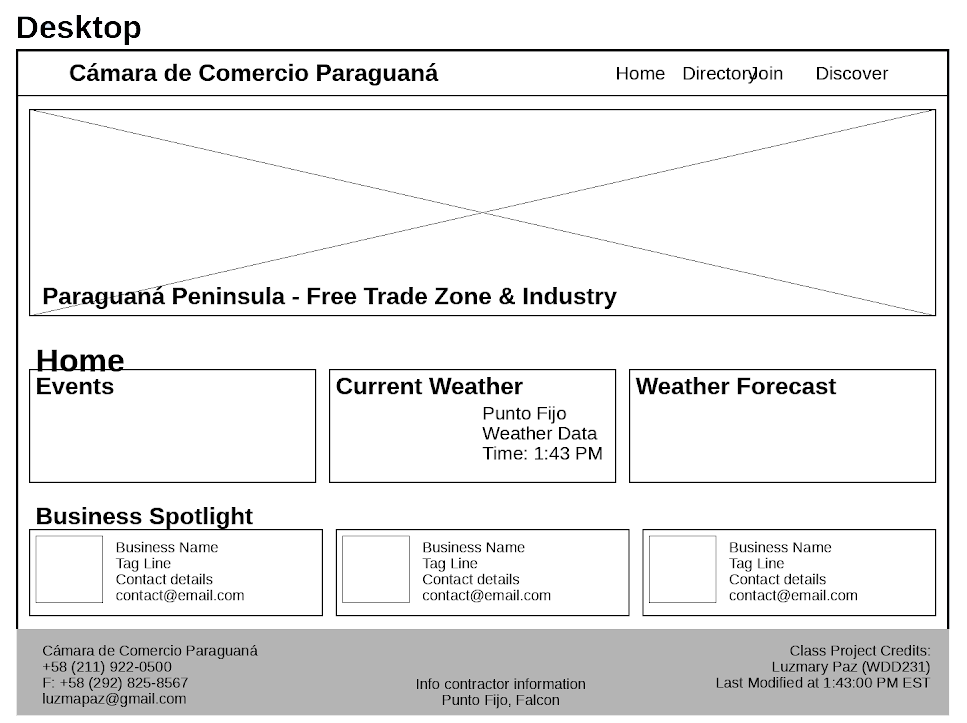

Site Name
Cámara de Comercio Paraguaná
This name represents the primary business authority for the Paraguaná Peninsula in Falcón, Venezuela. It was chosen to provide a professional and recognizable identity for both local merchants and international industrial partners.
Site Purpose
The site serves as a hub for the regional economy. It provides a business directory for the Free Trade Zone, lists upcoming networking events, and offers weather data critical for the region's maritime and petroleum operations.
Scenarios
- Scenario 1: "As a logistics manager, I need to check the current wind speeds in Punto Fijo to determine if it is safe to unload cargo at the port."
- Scenario 2: "As a new entrepreneur, I want to find the requirements to join the Chamber so I can network with other business owners in the Free Trade Zone."
Color Schema
The following colors will be used across the site:
Primary: #003366 (Deep Sea Blue)
Secondary: #E1AD01 (Médanos Gold)
Accent: #F9F9F9 (Sand White)
Typography
Heading Font: Montserrat (Bold, Professional)
Body Font: Open Sans (Clean, Legible)
Wireframes
Mobile View

Desktop View
